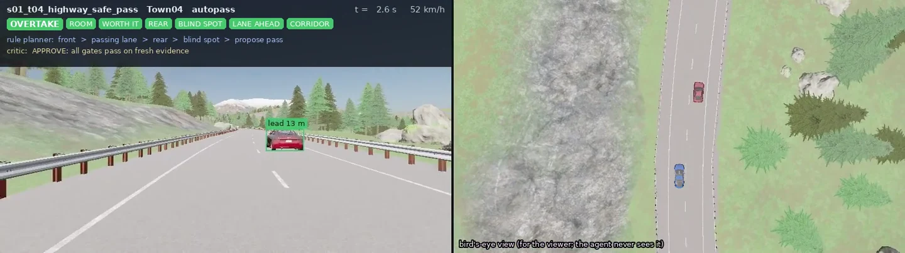

Release report · November 19, 2026
AutoPass-Gen
Overtaking under uncertainty in a closed-loop simulator

CARLA 0.9.16, Town04. Camera and overhead views captured during an executed run.
Research question
Can active evidence gathering improve progress around slow leads while explicit at-commit constraints limit maneuver risk? The same loop supports a rule planner and an optional language model.
Rohan built the original live CARLA integration, vision grounding, waypoint controller and evaluation harness. Xinwei led the initial hypothesis and passing architecture. Pranav led communication and contributed tool-priority debugging. Rathang audited motion evidence and contextualized failures.
Evaluation
Progress and risk
34 authored kinematic cases
| Policy | Scored / targets | Overtakes | Collisions | Unsafe commits | Expected behavior |
|---|---|---|---|---|---|
| AutoPass-Gen | 34/34 | 27 | 0 | 0 | 34/34 |
| Never pass | 34/34 | 0 | 0 | 0 | 7/34 |
| Always pass | 34/34 | 30 | 2 | 8 | 20/34 |
| Fixed thresholds | 34/34 | 16 | 2 | 4 | 20/34 |
Across 32 matched cases in which both policies reached 80 m collision-free, the median AutoPass time saving versus never-pass was 6.95 s.
500 sampled kinematic cases per policy
| Policy | Scored / targets | Overtakes | Collisions | Unsafe commits |
|---|---|---|---|---|
| AutoPass-Gen | 500/500 | 255 | 0 | 1 |
| Never pass | 500/500 | 0 | 0 | 0 |
| Always pass | 500/500 | 369 | 112 | 181 |
| Fixed thresholds | 500/500 | 165 | 45 | 84 |
Seed 20261119. AutoPass had 1 unsafe and 4 unwarranted commits. The 95% Wilson interval for its collision rate was 0.00% to 0.76% under the configured draws.
With synthetic noise and missed detections, AutoPass had 9 collisions and 74 unsafe commits. The result motivates explicit sensing coverage and uncertainty checks.
Scoring
Completed passes clear the lead and finish the return to lane. Collision events come from the simulator. An unsafe commit is a violation of the modeled hazard gates evaluated against simulator state at commit. Catalog labels additionally include the expected hold or yield behavior.
Audit findings
Older traces contained greedy-backstop proposals and early oncoming approvals with incomplete evidence. The rebuild separates instance identities, rejects expired or out-of-order checks, budgets requests, and checks for travel-lane clearance before aborting. The release preserves failures in the benchmark rather than hiding them in a composite score.
Full-simulator trials
What CARLA reproduced
CARLA camera callbacks and vehicle controls were exercised across four staged maps. The early sweep records integration limitations. Spot checks exercise perception and controller changes. Targeted regressions audit the rolling-start observation window and lane localization.
CARLA verified cases
| Policy | Scored / targets | Overtakes | Collisions | Unsafe commits | Expected behavior |
|---|---|---|---|---|---|
| AutoPass-Gen | 10/10 | 6 | 0 | 0 | 5/10 |
CARLA engineering sweep
| Policy | Scored / targets | Overtakes | Collisions | Unsafe commits | Expected behavior |
|---|---|---|---|---|---|
| AutoPass-Gen | 34/34 | 18 | 0 | 1 | 19/34 |
CARLA ablations
| Policy | Scored / targets | Overtakes | Collisions | Unsafe commits | Expected behavior |
|---|---|---|---|---|---|
| Always pass | 1/1 | 0 | 1 | 1 | 0/1 |
| AutoPass-Gen | 2/2 | 2 | 0 | 0 | 2/2 |
| Never pass | 1/1 | 0 | 0 | 0 | 1/1 |
CARLA rolling-start regression
| Policy | Scored / targets | Overtakes | Collisions | Unsafe commits | Expected behavior |
|---|---|---|---|---|---|
| AutoPass-Gen | 2/2 | 2 | 0 | 0 | 1/2 |
Conservative holds can fail scenario expectations when the camera lacks adequate rear or opposing-lane reach. Weather, occlusion, map staging, and actor dynamics influence sensor observations.
Extensions
Models, routes, and reproduction
Live local inference
Qwen 2.5 1.5B Instruct Q4_K_M with llama.cpp. Tool sequences and terminal choices are logged. Direct model control is an experimental kinematic baseline. The runtime used the deterministic planner for the main campaigns.
- Direct decision, s01. 1 calls, 2.4 s aggregate model time, overtake completed.
- Batch tool plan, s01. 2 calls, 10.1 s aggregate model time, overtake completed.
- Tool at a time, s01. 16 calls, 44.3 s aggregate model time, no completed overtake.
- Batch tool plan, s17. 12 calls, 75.7 s aggregate model time, overtake completed.
Learned steering and perception
The bounded steering imitator matched 34 of 34 catalog labels. Training used 25,000 synthetic teacher actions and validation used 5,000 independently sampled actions. Held-out mean absolute steering error was 0.0045 on normalized controls. NanoDet uses RGB to identify cars and CARLA depth to estimate metric gaps. CARLA runs characterize this hybrid sensor profile.
Trip navigation
A five-node graph invokes the passing loop on each segment. Geometry and arrival clocks define path cost. After repeated denials at Market, the adaptive route reached Clinic in 31.35 s compared with 34.90 s following the fixed route in this staged example.
Reproduce locally
python -m pip install -e '.[dev]' python -m pytest autopass run s17 --trace runs/rear.json.gz autopass bench --count 500 --seed 20261119 --out runs/heldout.json
The browser runs the kinematic loop with Pyodide. Video, contact sheets and compressed telemetry replace raw-frame exports for routine review. Evidence updates independently of the static page build. The experimental scope is simulated overtaking and staged routing.